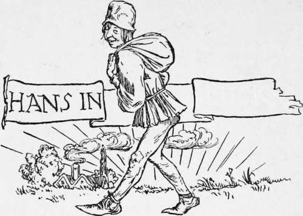

Hans In Luck
Description
This section is from the book "Household Tales by Brothers Grimm", by Brothers Grimm. Also available from Amazon: Household Tales by Brothers Grimm.
Hans In Luck
Some men are born to good luck: all they do or try to do comes right:—all that falls to them is so much gain :—all their geese are swans:—all their cards are trumps:—toss them which way you will, they will always, like poor puss, alight upon their legs, and only move on so much the faster. The world may very likely not always think of them as they think of themselves, but what care they for the world ? what can it know about the matter ?
One of these lucky beings was neighbour Hans. Seven long years he had worked hard for his master. At last he said, " Master, my time is up; I must go home and see my poor mother once more: so pray pay me my wages and let me go." And the master said, "You have been a faithful and good servant, Hans, so your pay shall be handsome." Then he gave him a lump of silver as big as his head.
Hans took out his pocket-handkerchief, put the piece of silver into it, threw it over his shoulder, and jogged off on his road homewards. As he went lazily on, dragging one foot after another, a man came in sight, trotting gaily along on a capital horse. " Ah ! " said Hans aloud, " what a fine thing it is to ride on horseback! There he sits as easy and happy as if he was at home, in the chair by his fireside; he trips against no stones, saves shoe-leather, and gets on he hardly knows how." Hans did not speak so softly but that the horseman heard it all, and said, " Well, friend, why do you go on foot then?" "Ah !" said he, "I have this load to carry: to be sure it is silver, but it is so heavy that I can't hold up my head, and you must know it hurts my shoulder sadly." "What do you say of making an exchange?" said the horseman. " I will give you my horse, and you shall give me the silver; which will save you a great deal of trouble in carrying such a heavy load about with you." "With all my heart," said Hans : " but as you are so kind to me, I must tell you one thing,—you will have a weary task to draw that silver about with you." However, the horseman got off, took the silver, helped Hans up, gave him the bridle into one hand and the whip into the other, and said, " When you want to go very fast, smack your lips loudly together, and cry ' Jip ! ' "
Hans was delighted as he sat on the horse, drew himself up, squared his elbows, turned out his toes, cracked his whip, and rode merrily off, one minute whistling a merry tune, and another singing—
"No care and no sorrow,
A fig for the morrow!,
We'll laugh and be merry,
Sing heigh down berry!"
After a time he thought he should like to go a little faster, so he smacked his lips and cried " Jip! " Away went the horse full gallop ; and before Hans knew what he was about, he was thrown off, and lay on his back by the road-side. His horse would have ran off, if a shepherd who was coming by, driving a cow, had not stopped it. Hans soon came to himself, and got upon his legs again, sadly vexed, and said to the shepherd, " This riding is no joke, when a man has the luck to get upon a beast like this, that stumbles and flings him off as if it would break his neck. However, I'm off now once for all: I like your cow now a great deal better that this smart beast that played me this trick, and has spoiled my best coat, you see, in this puddle; which, by the by, smells not very like a nosegay. One can walk along at one's leisure behind that cow—keep good company, and have milk, butter, and cheese, every day, into the bargain. What would I give to have such a prize!" "Well," said the shepherd, " if you are so fond of her, I will change my cow for your horse; I like to do good to my neighbours, even though I lose by it myself." "Done ! " said Hans, merrily. " What a noble heart that good man has! " thought he. Then the shepherd jumped upon the horse, wished Hans and the cow good-morning, and away he rode.
Hans brushed his coat, wiped his face and hands, rested a while, and then drove off his cow quietly, and thought his bargain a very lucky one. "If I have only a piece of bread (and I certainly shall always be able to get that), I can, whenever I like, eat my butter and cheese with it; and when I am thirsty I can milk my cow and drink the milk : and what can I wish for more? " When he came to an inn, he halted, ate up all his bread, and gave away his last penny for a glass of beer. When he had rested himself he set off again, driving his cow towards his mother's village. But the heat grew greater as noon came on, till at last, as he found himself on a wide heath that would take him more than an hour to cross, he began to be so hot and parched that his tongue clave to the roof of his mouth. "I can find a cure for this," thought he; " now will I milk my cow and quench my thirst ": so he tied her to the stump of a tree, and held his leathern cap to milk into ; but not a drop was to be had. Who would have thought that this cow, which was to bring him milk and butter and cheese, was all the time utterly dry ? Hans had not thought of looking to that.
While he was trying his luck in milking, and managing the matter very clumsily, the uneasy beast began to think him very troublesome; and at last gave him such a kick on the head as knocked him down; and there he lay a long while senseless. Luckily a butcher soon came by, driving a pig in a wheelbarrow. "What is the matter with you, my man?" said the butcher, as he helped him up. Hans told him what had happened, how he was dry, and wanted to milk his cow, but found the cow was dry too. Then the butcher gave him a flask of ale, saying, "There, drink and refresh yourself; your cow will give you no milk: don't you see she is an old beast, good for nothing but the slaughter-house?" "Alas, alas!" said Hans, " who would have thought it ? What a shame to take my horse, and give me only a dry cow! If I kill her, what will she be good for? I hate cow-beef; it is not tender enough for me. If it were a pig now,—like that fat gentleman you are driving along at his ease,—one could do something with it; it would at any rate make sausages." "Well," said the butcher, "I don't like to say no, when one is asked to do a kind, neighbourly thing. To please you I will change, and give you my fine fat pig for the cow." "Heaven reward you for your kindness and self-denial!" said Hans, as he gave the butcher the cow; and taking the pig off the wheel-barrow, drove it away, holding it by the string that was tied to its leg.
Continue to:
Tags
fairy tales, children's stories, brothers grimm, household tales